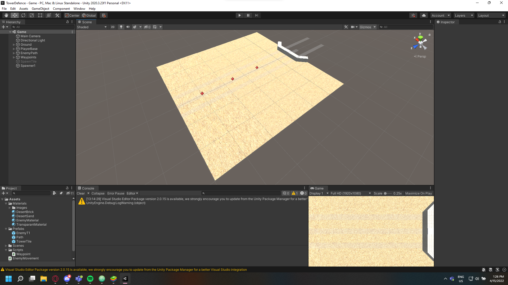
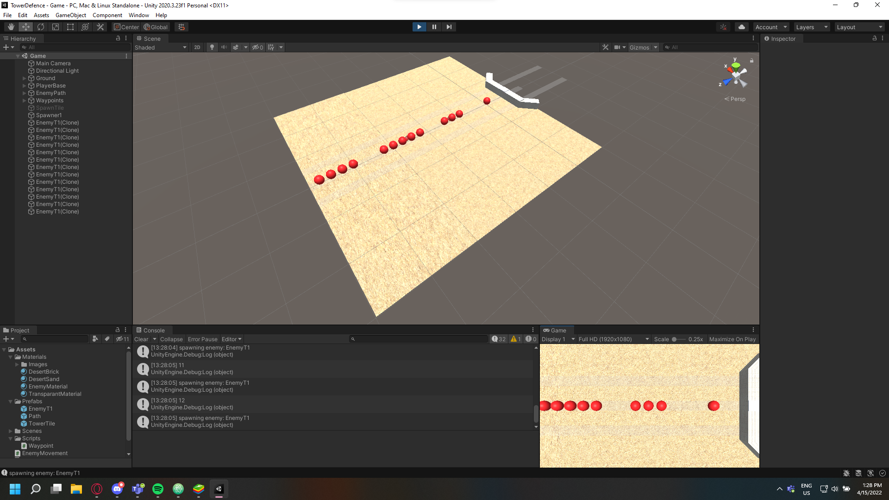

Selfmade project
Hier zul je een soort time line zien over hoe het project eruit ziet, soms kan het zijn dat datums ver uit elkaar zijn,
maar dit is dan omdat het vanwege omstandigheden niet mogelijk was om er aan te werken.
Dit is mijn selfmade tower defence project, dit een eigen project waar ik tussen mijn school opdrachten mee bezig tussen school opdrachten door,
het project is op het moment nog wel heel erg werk in progress
maar ik wil het vooral gebruiken om de technieken die ik leer op een eigen tempo te kunnen toepassen.


15/4/2022 : Voor nu is het project eigenlijk nog alleen een enemy wave spawner en wat simpele path following over 1 path.